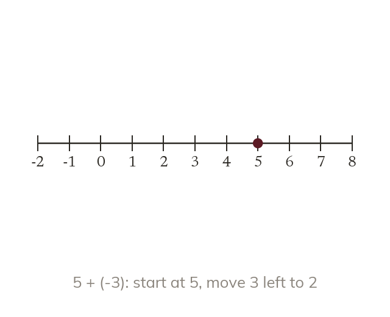
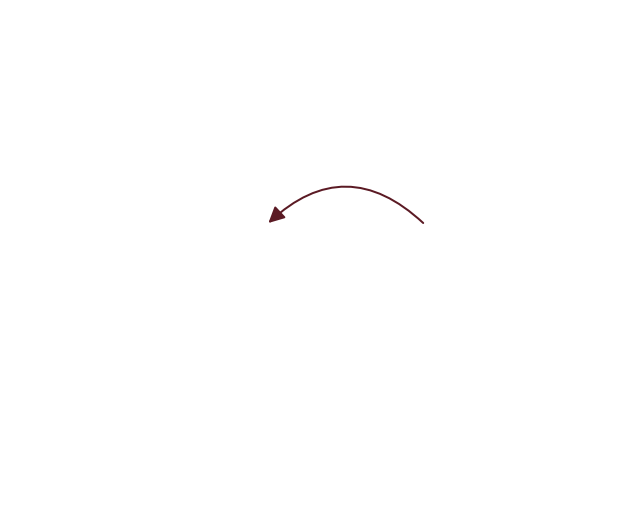

Moving on a number line
On a number line, adding moves right and subtracting moves left. Adding a negative subtracts: 5 + (-3) = 5 - 3 = 2.
On a number line, adding moves right and subtracting moves left, whatever the signs involved. Adding a negative subtracts: 5 + (-3) = 5 - 3 = 2, since moving 3 places left is the same whether you call it '+(-3)' or '-3'.